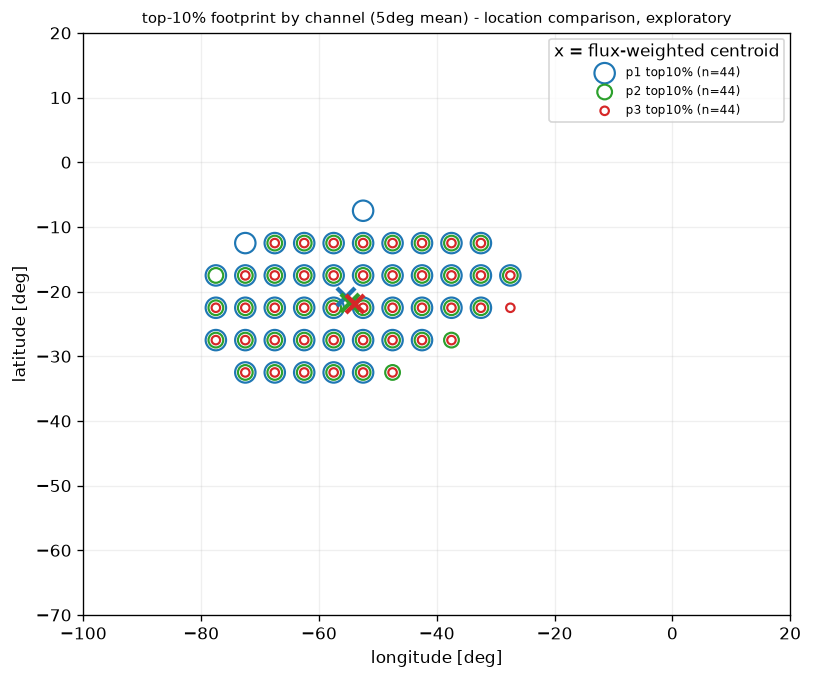
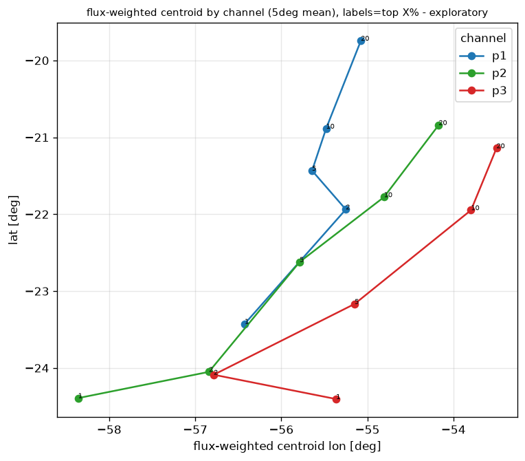

E. optional 7-day preview (2024-01-01..07) - mean flux 5 deg grid
figures generated by the python pipeline (notebooks/03_first_exploratory_map.ipynb), saved in ../figures/. this page only displays existing pngs - no computation here.
Exploratory visualization only. One-day NOAA-19 proton flux map for pipeline validation. Not a final South Atlantic Anomaly boundary. Not dose. Not health risk. Not a discovery claim.
| satellite | NOAA-19 |
|---|---|
| date | 2024-01-01 |
| channel | mep_omni_flux_p1 |
| channel meaning | differential proton flux around ~25 MeV (#/cm2-s-str-MeV) |
| region | latitude -70 to +20, longitude -100 to +20 |
| longitude conversion | [0,360) to [-180,180) |
| data source | NOAA/NCEI POES/MetOp SEM/MEPED L1b NetCDF |
flux maps use a log10 color scale; sample-count map is linear.

A. mean flux - 5 deg grid

B. median flux - 5 deg grid

C. mean flux - 2 deg grid

D. sample count - 5 deg grid
E. optional 7-day preview (2024-01-01..07) - mean flux 5 deg grid
monthly aggregation - NOAA-19, jan 2024, mep_omni_flux_p1. flux maps use a log10 color scale; blank cells = no data OR below the coverage threshold (insufficient samples), never interpolated. sample-count maps are linear. 5deg: 432/432 cells pass >=30 samples; 2deg: 2685/2700 pass.

F. monthly mean flux - 5 deg grid (cells with >=30 samples)

G. monthly median flux - 5 deg grid (cells with >=30 samples)

H. monthly sample count - 5 deg grid

I. monthly mean flux - 2 deg grid (cells with >=30 samples)

J. monthly median flux - 2 deg grid (cells with >=30 samples)

K. monthly sample count - 2 deg grid
Threshold-defined footprints are methodological objects, not final physical boundaries.
how the candidate high-flux region changes when defined with different flux thresholds (top 20/10/5/2/1%), on the coverage-passed CP4A cells. overlays: grey log10 base map + nested open-circle markers per threshold + "x" = flux-weighted centroid; blank = no data or coverage-failed. full numbers in the table: outputs/tables/cp4b_threshold_sensitivity.csv (20 rows).

L. threshold overlay - 5 deg mean_flux

M. threshold overlay - 5 deg median_flux

N. threshold overlay - 2 deg mean_flux

O. threshold overlay - 2 deg median_flux

P. flux-weighted centroid shift vs threshold (top20 -> top1), all grid/statistic combos
Channel comparisons show method/energy-channel dependence of candidate footprints. They are not dose or danger estimates.
p1/p2/p3 = MEPED omni differential proton flux at 25/50/100 MeV (#/cm2-s-str-MeV, from NetCDF metadata). absolute flux is NOT comparable across energies - compare footprint location/shape only. footprints overlap strongly (centers within ~100-300 km). full numbers: outputs/tables/cp4c_channel_threshold_sensitivity.csv (60 rows).

Q. mean flux p1 (25 MeV) - 5 deg grid

R. mean flux p2 (50 MeV) - 5 deg grid

S. mean flux p3 (100 MeV) - 5 deg grid

T. top-10% footprint by channel - 5 deg mean (x = flux-weighted centroid)

U. top-10% footprint by channel - 2 deg mean

V. flux-weighted centroid by channel vs threshold - 5 deg mean

W. selected area vs threshold by channel - 5 deg mean (area proxy)
Time-window footprints reflect both particle environment and orbital sampling/coverage. They are not final SAA boundaries.
how stable is the threshold-defined candidate footprint as the aggregation window changes (1 day -> 7 -> 14 -> month, plus 4 disjoint weeks)? satellite/channel/region/grid/threshold fixed. per-window coverage threshold = max(3, round((30/31)*day_count)) -> day 3, weekly/7-day 7, 14-day 14, month 30 (month reproduces cp4a 432/2685). one-day maps are orbit-track sparse (~47% of 5deg cells) and flagged. flux maps use a log10 color scale; blank = no data or below coverage threshold. top10 flux-weighted centroid drift: day -> 7-day +267 km, then +37, +5 (stabilises once coverage fills in); weekly windows cluster within 118 km. full numbers: outputs/tables/cp4d_time_window_threshold_sensitivity.csv (160 rows).

X. mean flux - 5 deg - 1 day (2024-01-01, orbit-track sparse)

Y. mean flux - 5 deg - 7 days (2024-01-01..07)

Z. mean flux - 5 deg - 14 days (2024-01-01..14)

AA. mean flux - 5 deg - full month (2024-01)

AB. sample_count by time window - 5 deg (coverage growth)

AC. sample_count by time window - 2 deg (coverage growth)

AD. flux-weighted centroid by time window - top10, 5 deg mean (day -> 7 -> 14 -> month)

AE. flux-weighted centroid by time window - top5, 5 deg mean

AF. selected area proxy by time window - 5 deg mean (per threshold)

AG. weekly window centroids - top10, 5 deg mean (4 disjoint weeks)

AH. weekly mean flux - 5 deg (4 disjoint weeks)
Satellite comparison is calibration-limited. Differences may reflect instrument/orbit/coverage effects, not only physical changes in the particle environment.
audit of the real NCEI archive found 5 satellites with complete jan-2024 coverage (noaa15, noaa18, noaa19, metop01, metop03), all loader-compatible with identical p1 units/long_name. audit table: outputs/tables/cp4e_satellite_availability_audit.csv. pilot = NOAA-18 (closest NOAA-19 analog: same POES series + SEM-2/MEPED generation). footprints broadly overlap: top10 flux-weighted centroid distance 13 km, top5 20 km, selected areas identical. absolute peak flux differs (noaa19 31.5 vs noaa18 36.2) but is NOT cross-calibrated - compare location/shape only. 40-row table: outputs/tables/cp4e_satellite_pilot_threshold_sensitivity.csv.

AI. noaa19 mean flux - 5 deg

AJ. noaa18 (pilot) mean flux - 5 deg

AK. noaa19 sample count - 5 deg

AL. noaa18 (pilot) sample count - 5 deg

AM. top-10% footprint by satellite - 5 deg mean (x = flux-weighted centroid)

AN. top-10% footprint by satellite - 2 deg mean

AO. flux-weighted centroid by satellite vs threshold - 5 deg mean

AP. selected area by threshold per satellite - 5 deg mean (area proxy)
Multi-satellite comparison is calibration-limited. This section evaluates footprint-location consistency, not absolute radiation intensity or dose.
all 5 satellites (full jan-2024 coverage, identical p1 units/long_name) processed through the same gridding + threshold pipeline. absolute flux is NOT cross-calibrated (absolute_flux_comparison_allowed = false on every row of the 100-row table outputs/tables/cp4f_multisatellite_threshold_sensitivity.csv). candidate high-flux footprints broadly overlap: max pairwise flux-weighted centroid spread (top10, 5deg mean) = 272 km, vs the CP4B intra-satellite threshold shift of 386 km - i.e. satellite choice moves the footprint LESS than threshold choice. noaa18/noaa19 cluster within ~13 km; NOAA-15 (oldest) is the location outlier (centroid lon ~-53 vs ~-56) with an anomalously high uncalibrated peak - reported, not treated as physical truth. pairwise table: outputs/tables/cp4f_pairwise_centroid_distances.csv.


AQ. mean flux - 5 deg - per satellite (noaa19, noaa18, noaa15, metop01, metop03)


AR. sample count - 5 deg - per satellite (others: cp4f_{sat}_sample_count_5deg.png)

AS. top-10% footprint overlay across satellites - 5 deg mean (x = flux-weighted centroid)

AT. top-10% footprint overlay across satellites - 2 deg mean

AU. top-5% footprint overlay across satellites - 5 deg mean

AV. top-5% footprint overlay across satellites - 2 deg mean

AW. flux-weighted centroid by satellite (o=top10, ^=top5) - 5 deg mean

AX. pairwise flux-weighted centroid distance (km) - top10 5 deg mean
Magnetic-coordinate diagnostics are descriptive. Particle-defined footprints and magnetic-field model variables are related but not identical.
the NOAA files already carry IGRF products (29 magnetic/coord variables, 0% missing) - no external IGRF package added. audit table: outputs/tables/cp5a_magnetic_variable_audit.csv. selected for the pilot (outputs/tables/cp5a_selected_magnetic_variables.csv): L_IGRF, Btot_sat, mag_lat_sat, mag_lon_sat (descriptive) + MLT (caution-only; L_IGRF -1 = invalid sentinel, excluded). inside-vs-outside the top10/top5 high-flux footprint (outputs/tables/cp5a_footprint_magnetic_distributions.csv, 20 rows): the footprint occupies a LOW, NARROW band in Btot_sat (median 16621 vs 20242 nT; IQR 593 vs 3978) and L_IGRF (1.29 vs 1.55; IQR 0.13 vs 1.13), while MLT does not discriminate. descriptive only - the particle footprint is NOT asserted to equal the field minimum; no causal/boundary/dose claims.

AY. particle-defined high-flux footprint reference (top10/top5, 5 deg mean)

AZ. DESCRIPTIVE: proton flux vs Btot_sat (IGRF total field at satellite, nT)

BA. DESCRIPTIVE: proton flux vs L_IGRF (invalid -1 removed)

BB. DESCRIPTIVE: proton flux vs magnetic latitude (mag_lat_sat)

BC. DESCRIPTIVE: proton flux vs MLT (magnetic local time) - note: does not discriminate footprint

BD. DESCRIPTIVE: high-flux footprint samples in magnetic-coordinate space (mag_lon vs mag_lat)

BE. DESCRIPTIVE: geographic median Btot_sat (IGRF field strength) - model context, not the footprint
These magnetic-coordinate profiles are descriptive. They do not define a final SAA boundary and do not imply dose or health risk.
quantitative descriptive framing of the particle-defined footprint in NOAA-provided IGRF variables. validity rules applied (L_IGRF -1 sentinel: 3914 rows excluded; mag_lon_sat wrap-aware only). tables: cp5b_magnetic_variable_validity.csv, cp5b_magnetic_binned_flux_profiles.csv, cp5b_footprint_magnetic_summary.csv, cp5b_magnetic_concentration_metrics.csv. headline: Btot_sat separates the footprint most strongly (separation metric ~1.6; ~100% of top10/top5 footprint samples below the regional Btot 25th pct; 90% of the top10 footprint within the lowest ~12% of regional Btot). L_IGRF concentrates more weakly; MLT does not discriminate. descriptive only - not a boundary, not causal.

BF. DESCRIPTIVE: flux profile by Btot_sat (median/p90 + sample_count bars)

BG. DESCRIPTIVE: flux profile by L_IGRF (invalid -1 excluded)

BH. DESCRIPTIVE: flux profile by mag_lat_sat

BI. DESCRIPTIVE: flux profile by MLT (local-time; non-discriminating)

BJ. DESCRIPTIVE: inside-vs-outside top10 footprint distribution - Btot_sat

BK. DESCRIPTIVE: inside-vs-outside top10 footprint distribution - L_IGRF

BL. DESCRIPTIVE: inside-vs-outside top10 footprint distribution - mag_lat_sat

BM. DESCRIPTIVE: Btot_sat vs L_IGRF colored by proton flux

BN. DESCRIPTIVE: high-flux footprint in Btot_sat vs L_IGRF space

BO. DESCRIPTIVE: footprint in magnetic lat/lon (wrap-aware axis; no naive IQR/mean)
all figures generated by the python pipeline. this page contains no scientific computation.